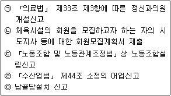
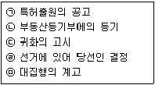
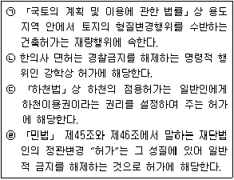
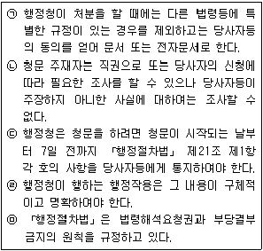
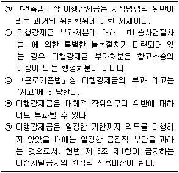

경찰공무원(순경)-행정법 (2020-09-19 기출문제)
1. 통치행위에 대한 설명으로 가장 적절하지 않은 것은? (다툼이 있는 경우 판례에 의함)
- 대통령의 긴급재정경제명령은 국가긴급권의 일종으로서 고도의 정치적 결단에 의하여 발동되는 행위이고 그 결단을 존중하여야 할 필요성이 있는 행위라는 의미에서 이른바 통치행위에 속한다고 할 수 있으나, 그것이 국민의 기본권 침해와 직접 관련되는 경우에는 당연히 헌법재판소의 심판대상이 된다.
- 남북정상회담의 개최과정에서 재정경제부장관에게 신고하지 아니하거나 통일부장관의 협력사업 승인을 얻지 아니한 채 북한측에 사업권의 대가 명목으로 송금한 행위 자체는 헌법상 법치국가의 원리와 법 앞에 평등원칙 등에 비추어 볼 때 사법심사의 대상이 된다.
- 대법원은 대통령의 서훈 취소행위를 통치행위로 보고 있다.
- 일반사병 이라크파병에 대한 헌법소원사건에서 외국에의 국군의 파견결정은 파견군인의 생명과 신체의 안전뿐만 아니라 국제사회에서의 우리나라의 지위와 역할, 동맹국과의 관계, 국가안보문제 등 궁극적으로 국민 내지 국익에 영향을 미치는 복잡하고도 중요한 문제로서 통치행위로 보고 있다.
(정답률: 85%)

2. 「법령 등 공포에 관한 법률」에 대한 설명으로 가장 적절하지 않은 것은?
- 헌법개정⋅법률⋅조약⋅대통령령⋅총리령 및 부령의 공포와 헌법개정안⋅예산 및 예산 외 국고부담계약의 공고는 관보(官報)에 게재함으로써 한다.
- 「국회법」 제98조 제3항 전단에 따라 하는 국회의장의 법률 공포는 수도권에서 발행되는 둘 이상의 일간신문에 게재함으로써 한다.
- 국민의 권리 제한 또는 의무 부과와 직접 관련되는 법률, 대통령령, 총리령 및 부령은 긴급히 시행하여야 할 특별한 사유가 있는 경우를 제외하고는 공포일부터 적어도 30일이 경과한 날부터 시행되도록 하여야 한다.
- 헌법개정 공포문의 전문에는 헌법개정안이 대통령 또는 국회재적의원 과반수의 발의로 제안되어 국회에서 재적의원 3분의 2이상이 찬성하고 국민투표에서 국회의원 선거권자 과반수가 투표하여 투표자 과반수가 찬성한 사실을 적고, 대통령이 서명한 후 국새(國璽)와 대통령인을 찍고 그 공포일을 명기하여 국무총리와 각 국무위원이 부서한다.
(정답률: 50%)
3. 공법관계와 사법관계에 대한 설명으로 가장 적절하지 않은 것은? (다툼이 있는 경우 판례에 의함)
- 국유재산의 관리청이 그 무단점유자에 대하여 하는 변상금부과 처분은 순전히 사경제 주체로서 행하는 사법상의 법률행위라 할 수 없고 이는 공권력을 가진 우월적 지위에서 행한 행정처분이다.
- 국가나 지방자치단체에 근무하는 청원경찰은 「국가공무원법」이나 「지방공무원법」상의 공무원이므로, 그 근무관계를 사법상의 고용계약관계로 보기는 어려워 그에 대한 징계처분의 시정을 구하는 소는 행정소송의 대상이지 민사소송의 대상이 아니다.
- 행정재산의 사용⋅수익허가처분의 성질에 비추어 국민에게는 행정재산의 사용⋅수익허가를 신청할 법규상 또는 조리상의 권리가 있다고 할 것이므로 공유재산의 관리청이 행정재산의 사용⋅수익에 대한 허가 신청을 거부한 행위 역시 행정처분에 해당한다.
- 국가의 철도운행사업은 국가가 공권력의 행사로서 하는 것이 아니고 사경제적 작용이라 할 것이므로, 이로 인한 사고에 공무원이 간여하였다고 하더라도 「국가배상법」을 적용할 것이 아니고 일반 「민법」의 규정에 따라야 한다.
(정답률: 31%)
4. 다음 사인의 공법행위 중, 수리를 요하는 신고로 본 판례는 모두 몇 개인가? (다툼이 있는 경우 판례에 의함)(문제 오류로 여기서는 가답안인 4번을 누르면 정답 처리 됩니다. 자세한 내용은 해설을 참고하세요.)

- 1개
- 2개
- 3개
- 4개
(정답률: 38%)
5. 행정입법부작위에 대한 설명으로 가장 적절하지 않은 것은? (다툼이 있는 경우 판례에 의함)
- 행정입법의 부작위는 그 자체로서 국민의 구체적인 권리의무에 직접적인 변동을 초래하는 것이어서 행정소송의 대상이 된다.
- 하위 행정입법의 제정 없이 상위 법령의 규정만으로도 집행이 이루어질 수 있는 경우라면 하위 행정입법을 하여야 할 헌법적 작위의무는 인정되지 않는다.
- 행정입법의 지체가 위법으로 되어 그에 대한 법적 통제가 가능하기 위하여는, 우선 행정청에게 시행명령을 제정(개정)할 법적 의무가 있어야 하고, 상당한 기간이 지났음에도 불구하고, 명령제정(개정)권이 행사되지 않아야 한다.
- 입법부가 법률로써 행정부에게 특정한 사항을 위임했음에도 불구하고, 행정부가 정당한 이유 없이 법률에서 위임한 시행령을 제정하지 않은 것은 그 법률에서 인정된 권리를 침해하는 불법행위가 될 수 있다.
(정답률: 56%)
6. 다음 준법률적 행정행위 중 통지행위에 해당하는 것만을 모두 고른 것은? (다툼이 있는 경우 판례에 의함)

- ㉠㉡㉢
- ㉢㉣㉤
- ㉠㉢㉤
- ㉡㉢㉣
(정답률: 58%)
7. 다음 강학상 허가에 대한 설명 중 옳고 그름의 표시(O, X)가 모두 바르게 된 것은? (다툼이 있는 경우 판례에 의함)

- ㉠(O) ㉡(X) ㉢(X) ㉣(O)
- ㉠(X) ㉡(O) ㉢(O) ㉣(X)
- ㉠(O) ㉡(O) ㉢(X) ㉣(X)
- ㉠(X) ㉡(X) ㉢(O) ㉣(O)
(정답률: 60%)
8. 송달에 대한 설명으로 가장 적절하지 않은 것은? (다툼이 있는 경우 판례에 의함)
- 우편물이 등기취급의 방법으로 발송된 경우 그것이 도중에 유실되었거나 반송되었다는 등의 특별한 사정에 대한 반증이 없는 한 그 무렵 수취인에게 배달되었다고 간주할 수 있다.
- 내용증명우편이나 등기우편과는 달리, 보통우편의 방법으로 발송된 경우 송달의 효력을 주장하는 측에서 증거에 의하여 이를 입증하여야 한다.
- 납세고지서의 명의인이 다른 곳으로 이사하였지만 주민등록을 옮기지 아니한 채 주민등록지로 배달되는 우편물을 새로운 거주자가 수령하여 자신에게 전달하도록 한 경우, 그 새로운 거주자에게 우편물 수령권한을 위임한 것으로 보아 그에게 한 납세고지서의 송달은 적법하다.
- 전자문서의 경우는 수신자가 관리하거나 지정한 전자적 시스템 등에 입력됨으로써 효력을 발생한다.
(정답률: 13%)
9. 행정행위의 취소에 대한 설명으로 가장 적절하지 않은 것은? (다툼이 있는 경우 판례에 의함)
- 과징금 부과처분에 있어 행정청이 납부의무자에 대하여 부과처분을 한 후 그 부과처분의 하자를 이유로 과징금의 액수를 감액하는 경우에 그 감액처분은 감액된 과징금 부분에 관하여만 법적 효과가 미치는 것으로서 당초 부과처분과 별개 독립의 과징금 부과처분이 아니라 그 실질은 당초 부과처분의 변경이고, 그에 의하여 과징금의 일부취소라는 납부의무자에게 유리한 결과를 가져오는 처분이므로 당초 부과처분이 전부 실효되는 것은 아니며, 그 감액처분으로도 아직 취소되지 않고 남아 있는 부분이 위법하다 하여 다투는 경우, 항고소송의 대상은 당초부과처분 중 감액처분에 의하여 취소되지 않고 남은 부분이고, 감액처분이 항고소송의 대상이 되는 것은 아니다.
- 지방병무청장이 재신체검사 등을 거쳐 현역병입영대상편입처분을 보충역편입처분이나 제2국민역편입처분으로 변경하거나 보충역 편입처분을 제2국민역편입처분으로 변경하는 경우 비록 새로운 병역처분의 성립에 하자가 있다고 하더라도 그것이 당연무효가 아닌 한 일단 유효하게 성립하고 제소기간의 경과 등 형식적 존속력이 생김과 동시에 종전의 병역처분의 효력은 취소 또는 철회되어 확정적으로 상실된다고 보아야 할 것이므로 그 후 새로운 병역처분의 성립에 하자가 있었음을 이유로 하여 이를 취소한다고 하더라도 종전의 병역처분의 효력이 되살아난다고 할 수 없다.
- 일정한 행정처분에 의하여 국민이 일정한 이익과 권리를 취득하였을 경우에 종전의 행정처분을 취소하는 행정처분은 이미 취득한 국민의 기존 이익과 권리를 박탈하는 별개의 행정처분으로 그 취소될 행정처분에 있어서의 하자 또는 취소하여야 할 공공의 필요가 있어야 하고, 나아가 행정처분에 하자 등이 있다 하더라도 취소하여야 할 공익상 필요와 취소로 인하여 당사자가 입게 될 기득권과 신뢰보호 및 법률생활안정의 침해 등 불이익을 비교⋅교량한 후 공익상 필요가 당사자가 입을 불이익을 정당화할만큼 강한 경우에 한하여 취소할 수 있는 것이며, 그 하자나 취소하여야 할 필요성에 대한 증명책임은 기존의 이익과 권리를 침해하는 처분을 한 그 행정청에 있다.
- 도로관리청이 도로점용허가를 함에 있어서 특별사용의 필요가 없는 부분을 도로점용허가의 점용장소 및 점용면적으로 포함한 흠이 있고 그로 인하여 점용료 부과처분에도 흠이 있게 된 경우, 흠 있는 부분에 해당하는 점용료를 감액하는 것은 당초 처분 자체를 일부 취소하는 변경처분이 아니라 흠의 치유에 해당한다.
(정답률: 56%)
10. 부관에 대한 설명으로 가장 적절하지 않은 것은? (다툼이 있는 경우 판례에 의함)
- 행정처분과 부관 사이에 실제적 관련성이 있다고 볼 수 없는 경우 공무원이 공법상의 제한을 회피할 목적으로 행정처분의 상대방과 사이에 사법상 계약을 체결하는 형식을 취하였다면 이는 법치행정의 원리에 반하는 것으로서 위법하다.
- 기한이란 행정행위 효력의 발생⋅소멸을 장래에 발생 여부가 확실한 사실에 종속시키는 부관을 말한다.
- 부담의 이행으로서 하게 된 사법상 매매 등의 법률행위는 그 부담을 붙인 행정처분과는 어디까지나 별개의 법률행위이므로 그 부담의 불가쟁력의 문제와는 별도로 그 법률행위가 사회질서위반이나 강행규정에 위반되는지 여부 등을 따져보아 그 법률행위의 유효 여부를 판단하여야 한다.
- 부담은 그 자체로서 행정쟁송의 대상이 될 수 없다.
(정답률: 74%)
11. 행정지도에 대한 설명으로 가장 적절한 것은? (다툼이 있는 경우 판례에 의함)
- 「행정절차법」상 행정지도는 의견제출과 사전통지절차에 대해 규정하고 있다.
- 「행정절차법」상 행정지도를 하는 자는 상대방이 서면의 교부를 요구하는 경우 그 행정지도의 내용과 신분을 적으면 되고 취지를 적을 필요는 없다.
- 「국가배상법」상 직무행위에는 비권력적 사실행위가 포함되지 않으므로 행정지도는 직무행위에 포함되지 않는다.
- 행정지도의 한계를 일탈하지 아니하였다면 그로 인하여 상대방에게 어떤 손해가 발생하였다 하더라도 행정기관은 그에 대한 손해배상책임이 없다.
(정답률: 56%)
12. 다음 「행정절차법」이 규정하고 있는 내용 중 적절하지 않은 것만을 고른 것은 모두 몇 개인가?

- 2개
- 3개
- 4개
- 5개
(정답률: 10%)
13. 정보공개에 대한 설명으로 가장 적절하지 않은 것은? (다툼이 있는 경우 판례에 의함)
- 「공공기관의 정보공개에 관한 법률」상 공개청구의 대상이 되는 정보란 공공기관이 직무상 작성 또는 취득하여 현재 보유⋅관리하고 있는 문서에 한정되는 것이기는 하나, 그 문서가 반드시 원본일 필요는 없다.
- 법원이 행정기관의 정보공개거부처분의 위법 여부를 심리한 결과 공개를 거부한 정보에 비공개사유에 해당하는 부분과 그렇지 아니한 부분이 혼합되어 있고, 공개청구의 취지에 어긋나지 않는 범위 안에서 두 부분을 분리할 수 있음을 인정할 수 있다 하여도 공개가 가능한 정보에 국한하여 일부취소를 명할 수는 없다.
- 공개를 구하는 정보를 공공기관이 한때 보유 관리하였으나 후에 그 정보가 담긴 문서 등이 폐기되어 존재하지 않게 된 것이라면 그 정보를 더 이상 보유⋅관리하고 있지 않다는 점에 대한 입증책임은 공공기관에게 있다.
- 공개청구의 대상이 되는 정보가 이미 다른 사람에게 공개되어 널리 알려져 있다거나 인터넷 등을 통하여 공개되어 인터넷검색 등을 통하여 쉽게 알 수 있다는 사정만으로는 소의 이익이 없다거나 비공개결정이 정당화될 수 없다.
(정답률: 62%)
14. 「행정조사기본법」에 대한 설명으로 가장 적절한 것은?
- 행정기관의 장은 매년 12월말까지 다음 연도의 행정조사운영계획을 수립하여 국무총리에게 제출하여야 한다.
- 행정조사를 실시할 행정기관의 장은 행정조사를 실시하기 전에 다른 행정기관에서 동일한 조사대상자에게 동일하거나 유사한 사안에 대하여 행정조사를 실시하였는지 여부를 반드시 확인해야 한다.
- 행정기관의 장은 법령등에 특별한 규정이 있는 경우를 제외하고는 행정조사의 결과를 확정한 날부터 7일 이내에 그 결과를 조사대상자에게 통지하여야 한다.
- 행정조사를 실시하고자 하는 행정기관의 장은 출석요구서, 보고요구서 자료제출요구서 및 현장출입조사서를 조사개시 7일 전까지 조사대상자에게 구두로 통지하여야 한다.
(정답률: 39%)
15. 다음 이행강제금에 대한 설명 중 적절한 것만을 모두 고른 것은? (다툼이 있는 경우 판례에 의함)

- ㉠㉡㉣
- ㉠㉡㉤
- ㉡㉢㉣
- ㉢㉣㉤
(정답률: 50%)
16. 행정상 강제징수에 대한 설명으로 가장 적절하지 않은 것은? (다툼이 있는 경우 판례에 의함)
- 행정상 강제징수란 국민이 국가 등 행정주체에 대하여 부담하고 있는 공법상의 금전급부의무를 이행하지 않은 경우 행정청이 의무자의 재산에 실력을 가하여 의무가 이행된 것과 동일한 상태를 실현하는 행정상 강제집행수단을 말한다.
- 「국세징수법」상 공매통지는 국가의 강제력에 의하여 진행되는 공매절차에서 체납자 등의 권리 내지 재산상 이익을 보호하기 위하여 법률로 규정한 절차적 요건에 해당하기 때문에 그 통지를 하지 아니한 채 공매처분을 한 경우에는 그 공매처분은 당연무효이다.
- 「국세징수법」상 압류 후 부과처분의 근거법률이 위헌으로 결정된 경우에는 압류를 해제하여야 한다.
- 「국세징수법」상 재판상의 가압류 또는 가처분 재산이 체납처분의 대상인 경우에도 「국세징수법」에 따른 체납처분을 한다.
(정답률: 46%)
17. 「국가배상법」 및 「국가배상법 시행령」상 배상심의회에 대한 설명으로 가장 적절하지 않은 것은?
- 국가나 지방자치단체에 대한 배상신청사건을 심의하기 위하여 법무부에 본부심의회를 둔다. 다만, 군인이나 군무원이 타인에게 입힌 손해에 대한 배상신청사건을 심의하기 위하여 국방부에 특별심의회를 둔다.
- 본부심의회와 특별심의회에는 적어도 소속공무원⋅법관⋅변호사⋅의사(군의관을 포함한다) 각 1인을 위원으로 두어야 한다.
- 배상신청이 신청인의 주소지관할 지구심의회를 포함하여 2중으로 접수된 사건은 신청인의 주소지관할 지구심의회에서 처리한다.
- 지구심의회에서 배상신청이 기각(일부기각된 경우를 포함한다) 또는 각하된 신청인은 결정정본이 송달된 날부터 1주일 이내에 그 심의회를 거쳐 본부심의회나 특별심의회에 재심(再審)을 신청할 수 있다.
(정답률: 40%)
18. 손실보상제도에 대한 설명으로 가장 적절하지 않은 것은? (다툼이 있는 경우에 판례에 의함)
- 농업손실보상청구권은 실정법상 민사소송절차에 의한다.
- 문화재보호구역의 확대 지정이 당해 공공사업인 택지개발사업의 시행을 직접 목적으로 하여 가하여진 것이 아님이 명백하므로 토지의 수용보상액은 그러한 공법상 제한을 받는 상태대로 평가하여야 한다.
- 공유수면 매립면허의 고시가 있다고 하여 반드시 그 사업이 시행되고 그로 인하여 손실이 발생한다고 할 수 없으므로, 매립면허 고시 이후 매립공사가 실행되어 관행어업권자에게 실질적이고 현실적인 피해가 발생한 경우에만 구 「공유수면매립법」(1999. 2. 8. 법률 제5911호로 전부 개정되기 전의 것)에서 정하는 손실보상청구권이 발생한다.
- 「하천법」 제50조에 의한 하천수 사용권은 「공익사업을 위한 토지 등의 취득 및 보상에 관한 법률」 제76조 제1항에서 손실보상의 대상으로 규정하고 있는 ‘물의 사용에 관한 권리’에 해당한다.
(정답률: 32%)
19. 「행정소송법」상 항고소송의 제소기간에 대한 설명으로 가장 적절한 것은? (다툼이 있는 경우 판례에 의함)
- 취소소송은 처분 등이 있음을 안 날부터 90일 이내에 제기하여야 하는데, 행정심판청구를 할 수 있는 경우에 행정심판청구가 있은 때의 기간은 재결서의 정본을 송달받은 날부터 기산하며, 여기서 말하는 ‘행정심판’은 「행정심판법」에 따른 일반행정심판만을 의미한다.
- 처분이 있음을 안 날부터 90일을 넘겨 청구한 부적법한 행정심판청구에 대한 재결이 있은 후 재결서를 송달받은 날부터 90일 이내에 원래의 처분에 대하여 취소소송을 제기하면 취소소송은 제소기간을 준수한 것으로 본다.
- 무효등확인소송의 경우에도 취소소송과 같이 제소기간에 제한이 있다.
- 처분 당시에는 취소소송의 제기가 법제상 허용되지 않아 소송을 제기할 수 없다가 위헌결정으로 인하여 비로소 취소소송을 제기할 수 있게 된 경우에는 객관적으로는 ‘위헌결정이 있은 날’, 주관적으로는 ‘위헌결정이 있음을 안 날’ 비로소 취소소송을 제기할 수 있게 되어 이때를 제소기간의 기산점으로 삼아야 한다.
(정답률: 48%)
20. 행정심판에 대한 설명으로 가장 적절하지 않은 것은? (다툼이 있는 경우 판례에 의함)
- 사립학교 교원 징계처분에 대한 교원소청심사위원회의 결정은 행정심판의 재결이다.
- 변상 판정에 대한 감사원의 재심의 판결은 행정소송의 대상이 된다.
- 「노동위원회법」상 중앙노동위원회의 처분에 대한 소송은 중앙노동위원회 위원장을 피고(被告)로 하여 처분의 송달을 받은 날부터 15일 이내에 제기하여야 한다.
- 「특허법」상 특허취소결정 또는 심결에 대한 소 및 특허취소신청서 심판청구서⋅재심청구서의 각하결정에 대한 소는 특허법원의 전속관할로 한다.
(정답률: 27%)
"대법원은 대통령의 서훈 취소행위를 통치행위로 보고 있다."의 경우, 대통령의 서훈 취소행위는 국가의 권위와 명예를 상징하는 것으로서 국가의 통치에 직접적인 영향을 미치는 행위이므로 통치행위로 보는 것이 타당하다.